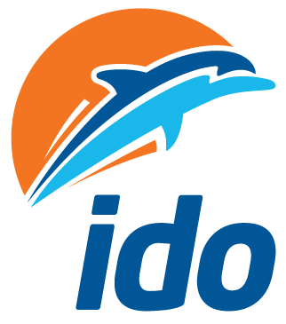

Excelbase
İDO Operasyon
CANLI
İDO · EgeExcelbase
Gündüz cam katmanları — feribot sahnesi üzerinde yumuşak derinlik.
Aktif sefer
Yenikapı → Bandırma
Kapı 3 · 14:40 kalkış
12dk
Bugün
Bostancı → Adalar
15:10 · Kapı 1
Hazırlık
Kadıköy → Beşiktaş
15:25 · Kapı 2
Açık
Saha
Yolcu akışı
Kapı 3 yoğun — yavaşlat
Uyarı
Araç rampası
Son kontrol tamam
OK
Holo C · Gündüz Ege camı
Cyberpunk yok: neon cyan, koyu HUD, scanline yok.
visionOS / liquid-glass derinlik + İDO turuncu + gerçek feribot sahnesi.
Marka hero’da; cam paneller sahnede yüzer.